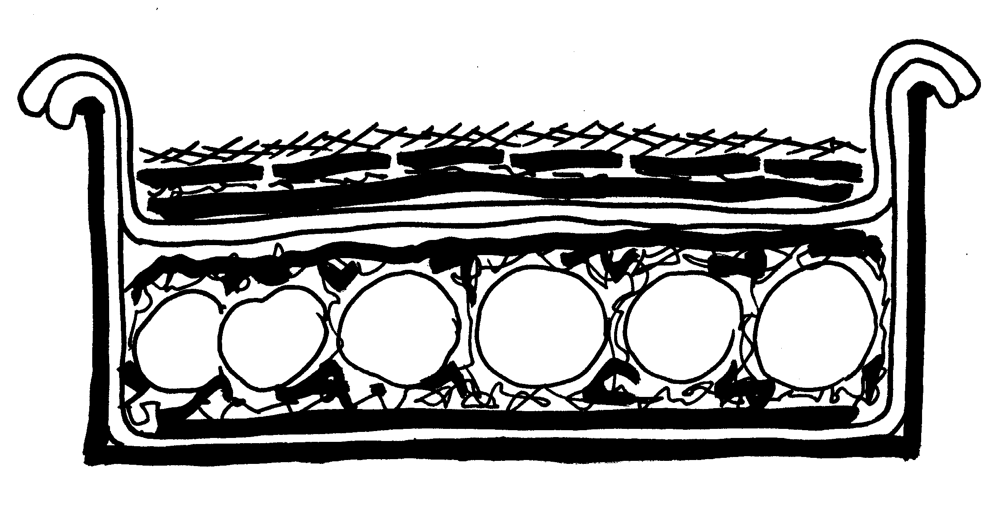

All In One Family
Apricot Chicken
Baked Whitefish
Baked Ziti
Beef Stroganoff
Beef Sukiyaki
BOEUF BOURGUIGNON
Cauloflower Cheese Pie
Chicken Bouillabase
Chinese Pork Roast
Clam Chowder
Clam Fritters
Clam And Oyster Pie
Coquilles
Crab And Spinach Casserole
Easy Moist Chicken
Feijoda
Fish Cakes
Four-In-Hand Chicken
Fried Chicken
Fried Combination Rice
Fried Ketchup Shrimp
Fried Rice
Ham Loaf
Ham Spread
Kenyan Curry And Fish
KULEBIAKA
Lamb And Tahini-Stuffed Pita Wedges
Lasagne
Chicken With Lemon and Herbs
Malaysian Steamboat
Marinated Chicken Breast
Meatloaf
More
Moussaka
Mussels In A Light Italian Sauce
One Pot Meal
Pasta With Clam And Vegitable Sauce
Pizza A La Pickens
Pork Loaf
Quiche
Refried Beans - New Mexican Style
Salmon In Cork Husk Boats
Satay
Shirred Eggs
SHRIMP ETOUFFÉE
Singapore Noodles
Steak And Okra Gumbo
Steamed Fish
Sweet And Sour Fish
Sweet And Sour Shrimp
Swiss Fondue
Tempura
Texas Red Chili
Turkey CRÊPES
Turkey Tetrazini
Turkey Wraps
Veal Parmesan
Venus' Belly Button

This experiment turned out well as a granddaddy pizza.
Preheat oven to 400º.
1 cup plus of sliced onions
1 cup plus of sliced green peppers
2 cloves chopped garlic
olive oil
1 pound ground beef
2 to 3 cups tomato sauce
1 stick pepperoni
1 pound Mozzarella
1/2 cup Parmesan
1 to 2 teaspoons oregano
1 teaspoon basil
salt and pepper
basic pizza dough
Prepare basic pizza dough recipe and roll out as for pizzas. Put first pizza on the bottom of a 9- or 10-inch springform pan oiled with olive oil. Make sure to bring the dough up the sides of the pan to and over the top edge and still roll over the top layer of dough to seal the two layers.
Make 1 to 1-½ inch meatballs of the ground beef, or a recipe of your choice, brown them in a skillet, and remove them. Spread a thin layer of pizza sauce on the bottom layer of dough, and then place the meatballs in one layer on top of the sauce in the springform pan.
Sauté the onions, peppers, and garlic in a little olive oil until they become tender. Then spread them on top of the meatballs to cover and fill voids between the meatballs. Then on top of the peppers and onions, spread a layer of pizza sauce again.
Roll out and form the top layer of dough. Place on top of the pizza. Match up the edges, and seal by rolling the two layers of dough together. Wiping the dough lightly with water between the two layers where they have contact will help the seal.
On top of the top layer, spread a layer of pizza sauce. Then add sliced pepperoni and a light layer of mozzarella cheese. Add pizza sauce on top of the cheese. Bake in a 400 oven or until done, approximately 30 minutes. About 10 minutes before the creation is done, remove and place a layer of mozzarella cheese and parmesan cheese combination over the top. Return to the oven to finish baking. This should prevent the cheese from getting too brown.
When baked, remove from the oven and allow to rest for about 15 minutes to set up. Cut into wedges and serve. Freezes well in individual servings.